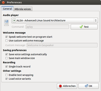
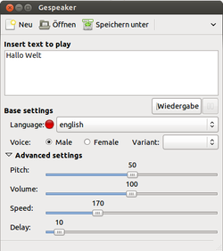

Gespeaker
Dieser Artikel wurde für die folgenden Ubuntu-Versionen getestet:
Ubuntu 16.04 Xenial Xerus
Ubuntu 14.04 Trusty Tahr
Zum Verständnis dieses Artikels sind folgende Seiten hilfreich:
gespeaker  ist ein GTK+-Frontend für das Sprachprogramm eSpeak. Es kann verwendet werden, um eingegebenen Text direkt als Sprache auszugeben, oder vorhandene Texte (*.txt) vorlesen zu lassen. Dabei können auch gleich Aufnahmen im .wav-Format erstellt werden. Neben den in eSpeak vorhandenen Stimmen lassen sich auch die "schöneren", natürlicher klingenden Stimmen des MBROLA-Projektes nutzen.
ist ein GTK+-Frontend für das Sprachprogramm eSpeak. Es kann verwendet werden, um eingegebenen Text direkt als Sprache auszugeben, oder vorhandene Texte (*.txt) vorlesen zu lassen. Dabei können auch gleich Aufnahmen im .wav-Format erstellt werden. Neben den in eSpeak vorhandenen Stimmen lassen sich auch die "schöneren", natürlicher klingenden Stimmen des MBROLA-Projektes nutzen.
Installation¶
Gespeaker ist in den Paketquellen vorhanden, es müssen die Pakete
gespeaker (universe)
mbrola (multiverse, optional)
 mit apturl
mit apturl
Paketliste zum Kopieren:
sudo apt-get install gespeaker mbrola
sudo aptitude install gespeaker mbrola
sowie die gewünschten mbrola-Sprachpakete installiert werden (als Pakete liegen die deutschen Stimmen -de4 und -de6, männlich, sowie -de5 und -de7, weiblich, vor).
Hinweis:
Unter Ubuntu 16.04 funktioniert für 64-bit-Systeme das Mbrola-Paket aus den Quellen nicht, siehe Mbrola, man kann sich aber mit einem aktualisierten funktionsfähigen Debian-Paket behelfen.
Manuelle Installation¶
Die aktuellste Version liegt auf Downloadseite  als .deb-Paket[2] vor. Das Programm lässt sich auch aus dem Quellcode kompilieren, dazu das aktuelle tar.gz-Archiv von der Downloadseite herunterladen, entpacken[3] und kompilieren[4].
als .deb-Paket[2] vor. Das Programm lässt sich auch aus dem Quellcode kompilieren, dazu das aktuelle tar.gz-Archiv von der Downloadseite herunterladen, entpacken[3] und kompilieren[4].
Plugins¶
Gespeaker-Plugins lassen sich ebenfalls von der Downloadseite beziehen, es stehen .deb-Pakete für die Programme telepathy , Pidgin, Kopete und emesene außerdem ein Debugging-Plugin zu Verfügung, alle allerdings nur für Version 0.8.1., die Entwicklung wurde eingestellt.
Hinweis!
Fremdpakete können das System gefährden.
Weitere Mbrola-Stimmen¶
Weitere Stimmen für MBROLA lassen sich von der Downloadseite des Projekts beziehen. Die Archive müssen entpackt, und die Stimme-Dateien (de*) mit Root-Rechten[5] in das Verzeichnis /usr/share/mbrola/deX/ kopiert werden. Allerdings bietet eSpeak momentan keine Unterstützung für die Mbrola-Stimmen de1 und de8, insofern sind sie auch nicht in Gespeaker nutzbar.
Hinweis!
Fremdsoftware kann das System gefährden.
Nach erfolgreicher Installation findet man das Programm in GNOME unter "Anwendungen -> Multimedia -> Gespeaker". Sinnvoller wäre ggf. ein Eintrag in "Barrierefreiheit", der müsste selbst erstellt werden [6].

Konfiguration¶
Über den Reiter "Edit -> Einstellungen" (oder Strg + P ) erreicht man das "Preferences"-Fenster. Dort lassen sich unter "General" Einstellungen zur Soundausgabe ("Audio Player") machen (dabei geht es eher um das verwendete Soundsystem). Es lässt sich die Willkommens-Nachricht konfigurieren, auf Wunsch auch eine eigene Nachricht festlegen. Außerdem können Einstellungen zu den zu speichernden Fenster-Einstellungen gemacht werden. Für die Aufnahme kann Mono ("Single track record") eingestellt werden. Mit der Aktivierung von "Enable text wrapping" wird erreicht, dass eingefügte lange Textzeilen visuell umgebrochen werden, "Load voice variants" ermöglicht die Verwendung von unterschiedlichen Varianten zu den einzelnen Stimmen (nicht für Mbrola-Stimmen möglich). Unter "Mbrola voices" findet man Informationen zu den verwendbaren Stimmen, es lässt sich auch ein angepasster Ort für die installierten Mbrola-Stimmen einstellen ("Mbrola voices path"). Unter "Plugins" werden die installierten Plugins aufgeführt, sie lassen sich dort (de-)aktivieren und ggf. Einstellungen dazu vornehmen ("Configure plugin").
Bedienung¶
 Im Hauptprogramm wird im Eingabefenster der auszugebende Text geschrieben ("Insert text to play"), und dann mit dem "Wiedergabe"-Knopf "vorgelesen". Die "Neu"-Schaltfläche entfernt den Text, "Öffnen" ermöglicht es, abgespeicherte Text-Dateien (allerdings nur im .txt-Format!) einzufügen und vorlesen zu lassen. Mit "Speichern" lässt sich der Text sichern. "Aufnahme" startet eine Aufnahme im .wav-Format; zunächst muss der Speicherort für die Aufnahme festgelegt werden. Mit "Zurücksetzen" werden die Ausgangseinstellungen für das Programm wieder hergestellt.
Unter dem Eingabefenster ("Base Settings") lassen sich die zu verwendende Sprache/Stimme festlegen; ggf. auch weitere Einstellungen ("male, female, variant"), falls für die Stimme vorhanden, und die Option in den "Preferences" aktiviert ist. Unter "Advanced settings" (über den Pfeil auch zu verbergen) können die Tonhöhe ("Pitch"), Lautstärke ("Volume") Sprechgeschwindigkeit ("Speed") sowie die Pausenlänge zwischen den einzelnen Wörtern ("Delay") den eigenen Wünschen entsprechend angepasst werden. Diese Funktionen lassen sich allerdings nicht bei laufender Wiedergabe verändern.
Probleme¶
Bei der Wiedergabe von Texten mit Mbrola-Stimmen friert die Oberfläche ein und reagiert nicht auf Eingaben ("Pause", "Stopp" etc.), siehe auch Bugreport . Erst nach Beenden der Ausgabe ist das Fenster wieder erreichbar. Auch bei einem externen Abbruch von Gespeaker läuft die Sprachausgabe weiter, in so einem Falle muss noch der Prozess espeak beendet werden, oder abgewartet werden, bis das Ende der Textausgabe erreicht ist. Abhilfe schafft es, in der Datei /usr/share/gespeaker/src/Settings.py in einem Editor[8] mit Root-Rechten[5] die Zeile
argsEspeak = '-a %v -p %p -s %s -g %d -v %l -f %f'
in
argsEspeak = '-a %v -p %p -s %s -g %d -v %l -f %f --pho'
umzuändern. Das Problem ist in Version 0.8.2, die in Ubuntu 14.04 in den Quellen vorliegt, gelöst.
Mbrola-Stimmen einbinden¶
Bei der Installation der Mbrola-Stimmen aus den Paketquellen werden diese in einzelne Unterordner, z.B. /usr/share/mbrola/de4/de4 installiert. Um auf die Stimmen zugreifen zu können, muss in "Bearbeiten -> Einstellungen -> Mbrola-Stimmen" ggf. der Pfad richtig angegeben werden (Dropdown-Menü aufrufen, dort "Andere..." auswählen und zu /usr/share/mbrola navigieren und dann "Aktualisieren"), falls keine Stimmen angezeigt werden.
Außerdem scheint es unter 64-Bit-Systemen zusätzlich ein Problem mit den Programmpfaden zu geben (Details siehe Bugreport auf Launchpad).
Dies führt dazu, dass die Stimmen auch bei korrekter Angabe des Mbrola-Pfades nicht gefunden werden können. Dieser Fehler wurde in Version 0.8.4 und neuer behoben, welche ab Ubunt 16.04 in den Quellen sind. Für ältere Versionen kann das Problem durch das Setzen eines symbolischen Links behoben werden:
sudo ln -s /usr/lib/x86_64-linux-gnu/espeak-data /usr/share/espeak-data
Tastenkürzel¶
| Gespeaker | |
| Tasten | Funktion |
| Strg + N | "File -> Neu" |
| Strg + O | "File -> Öffnen" |
| Strg + S | "File -> Speichern unter" |
| Strg + Q | "File -> Beenden" |
| Strg + X | "Edit -> Ausschneiden" |
| Strg + C | "Edit -> Kopieren" |
| Strg + V | "Edit -> Einfügen" |
| F5 | "Edit -> Wiedergabe" |
| F6 | "Edit -> Pause" |
| F7 | "Edit -> Stopp" |
| Strg + P | "Edit -> Einstellungen" |
Alternativen¶
Sprachausgabe
 - Übersichtsseite
- ÜbersichtsseiteKMouth - KDE-Programm zur Sprachausgabe
Omilo - ähnliches Programm, das Festival/Flite und Mary-Stimmen verwenden kann
Skripte/Book-To-MP3- damit lassen sich neben .txt eine Vielzahl von Formaten ausgeben
Skripte/pdf2mp3 - ähnliches Python-Skript, das pdf- und ascii-Dateien umwandeln in mp3-Dateien umwandeln kann
eSpeak - Grundlage für Gespeaker
Screenreader - Programme, um Webseiten vorlesen zu lassen
PlayItSlowly - kann erstellte .wav-Dateien wiedergeben, wobei während der Wiedergabe Tonhöhe, Geschwindigkeit etc. verändert werden kann

- Erstellt mit Inyoka
-
 2004 – 2017 ubuntuusers.de • Einige Rechte vorbehalten
2004 – 2017 ubuntuusers.de • Einige Rechte vorbehalten
Lizenz • Kontakt • Datenschutz • Impressum • Serverstatus -
Serverhousing gespendet von